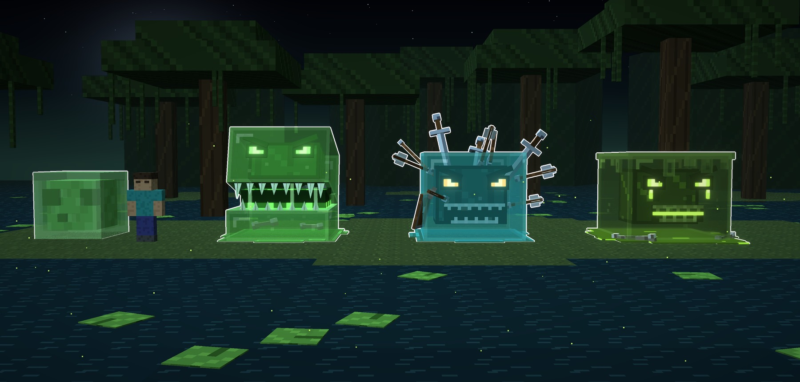
Atalaya · mob · rediseño del Slime · 15-10-2026
El Slime, rediseñado
Como con el Blaze, el Slime sigue siendo un Slime: el cubo de gelatina que se transparenta, el
cubo de dentro con la cara delante y el charco que deja. Lo nuevo es una cara de monstruo que brilla a
través de la gelatina y, en cada tipo, una cosa grande que lo cambia. Son tres: el Tragón, el
Erizo y el Fundido.
En la foto de arriba, el pequeño de la izquierda es el Slime grande de vanilla (2 bloques), dibujado
por nosotros para comparar. Los nuevos miden 3 bloques de ancho, y el Erizo llega a 3,7 de alto con lo que lleva
clavado.
- Lo común a los tres:
- la gelatina de verdad, translúcida: se ve lo que hay dentro y lo de detrás;
- el canto un tono más claro, el brillo en ele arriba a la izquierda y un par de burbujas;
- el cubo de dentro y, delante, la cara, como en el de vanilla, pero de monstruo: el ceño en
uve y los ojos rasgados que brillan;
- la misma pose, plantado sobre su charco.
- Hechos como un mob: en cajas, a un téxel por píxel, y los dientes en hoja.
Las fotos van sin letras y con el borde blanco, en la ciénaga de noche, donde salen los slimes:
agua oscura con nenúfares, robles de pantano con lianas, setas, la luna cuadrada y luciérnagas.
A · el Tragón · verde de siempre
El Tragón
- El cubo se abre en dos, como unas fauces: la parte de arriba se levanta por delante y la bisagra queda
detrás.
- Los dientes son de gelatina dura, en hoja: largos en las esquinas y más cortos en medio, arriba y
abajo.
- Entre la quijada y la boca cuelgan babas de gelatina, y al fondo la garganta brilla en
verde.
- Dentro se ve lo que se ha tragado: huesos y un yelmo de hierro.
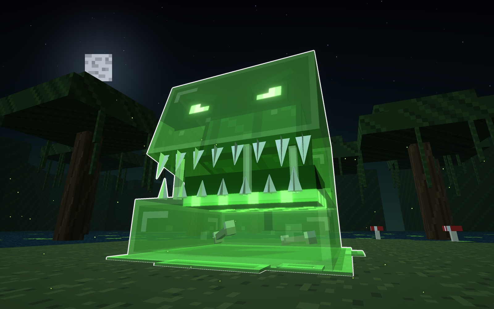
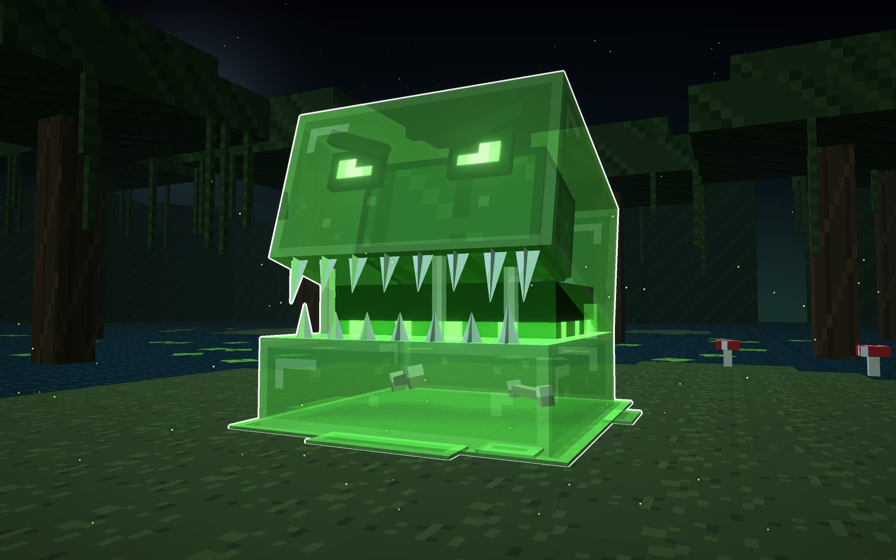
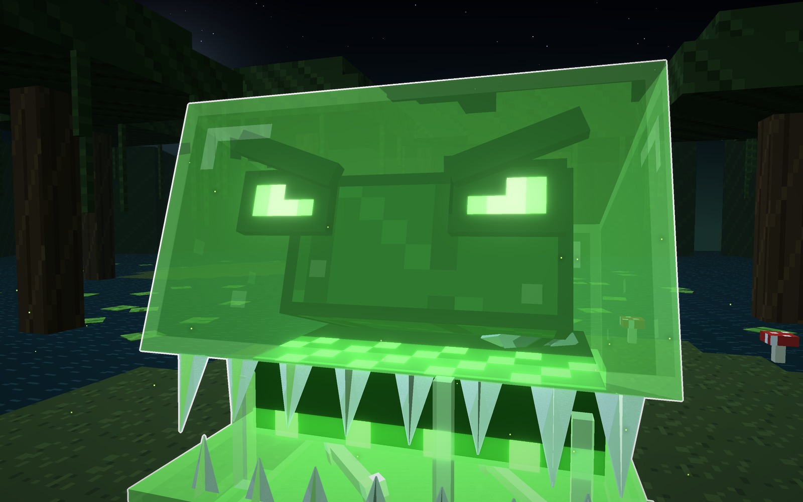
Su forma
- Lo grande
- se abre en fauces
- Dentro
- huesos y un yelmo
- Brillo
- verde
Señas
- 3 bloques de ancho y casi 3 de alto con la boca abierta.
- Cómo pelearía: salta encima y te traga un momento.
B · el Erizo · verde de ciénaga
El Erizo
- Lleva clavadas las armas de los que no pudieron con él:
- tres espadas y un hacha arriba;
- cinco flechas, con sus plumas, por los lados;
- una lanza detrás;
- un escudo hundido de canto.
Se ve la punta de cada arma dentro de la gelatina.
- La cara: los ojos ámbar y una mueca de dientes.
- La gelatina es verde azulada, de agua de ciénaga.
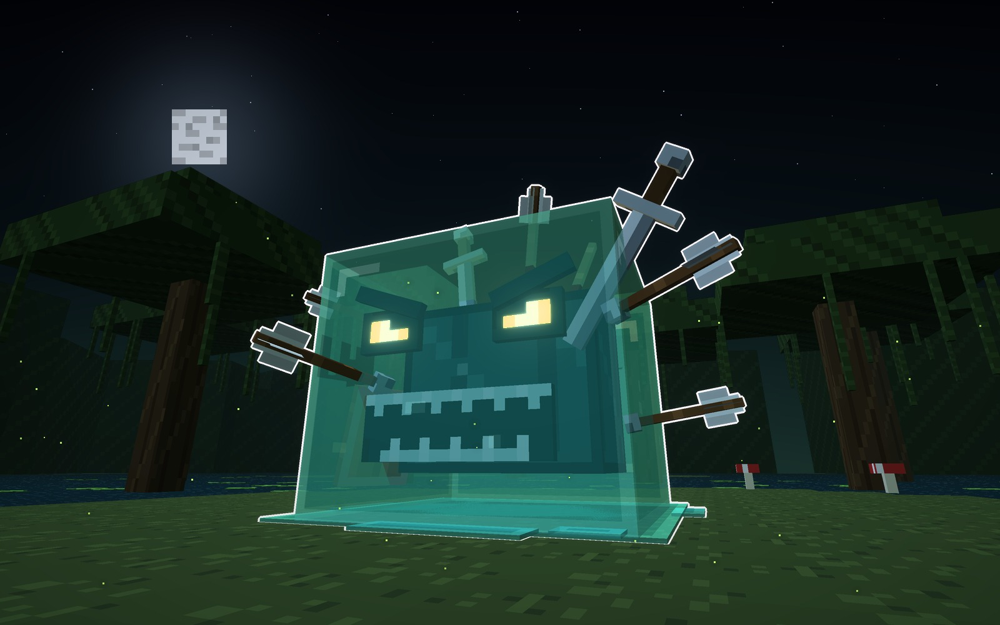
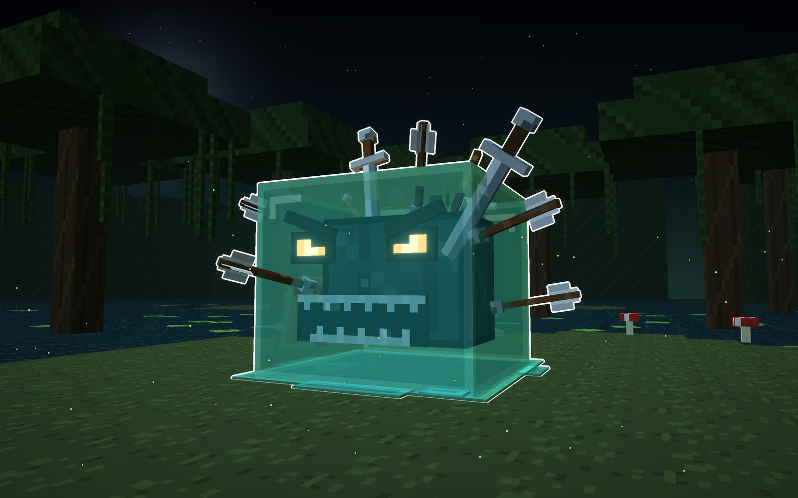
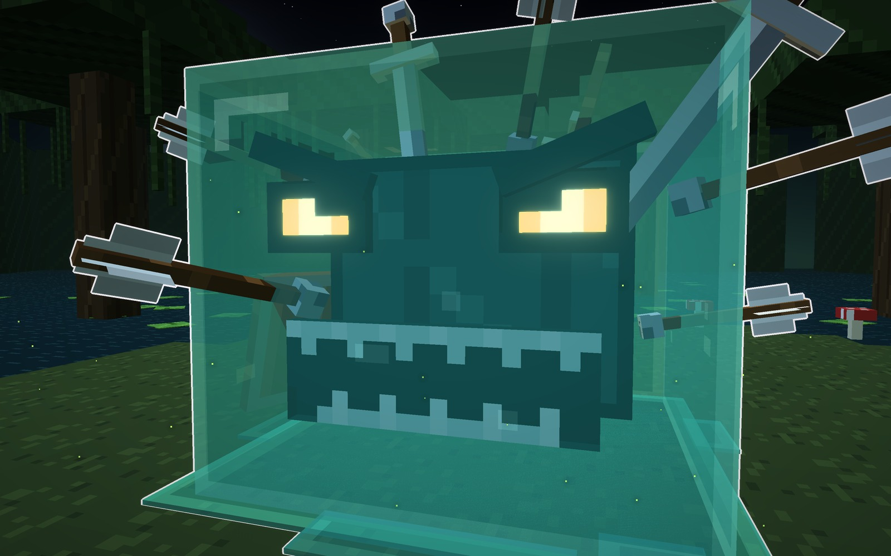
Su forma
- Lo grande
- las armas clavadas
- Cara
- mueca de dientes
- Brillo
- ámbar
Señas
- 3,7 bloques de alto con las espadas.
- Cómo pelearía: se sacude y dispara lo que lleva clavado.
C · el Fundido · negro y ácido
El Fundido
- La gelatina es negra y se derrite: el borde de arriba se escurre con goterones cortos.
- Debajo deja un charco de ácido que brilla, con huesos comidos.
- La cara: los ojos lloran ácido y la boca es una raja que brilla entre los dientes.
- Por los lados y por detrás suben burbujas de ácido.
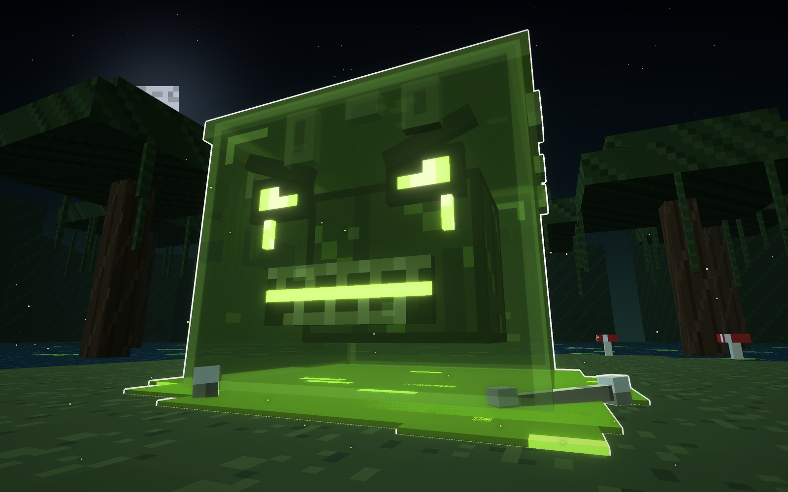
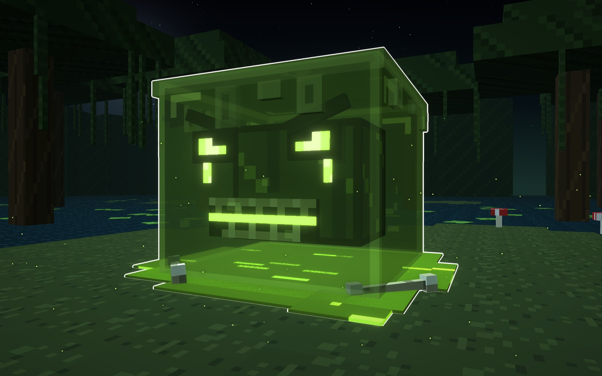
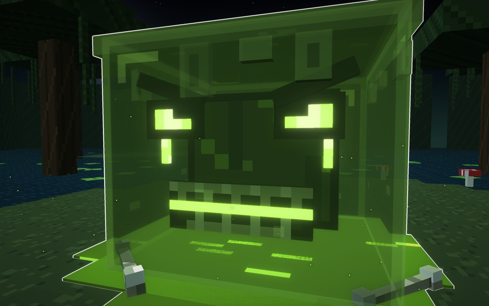
Su forma
- Lo grande
- se derrite en ácido
- Cara
- llora ácido
- Brillo
- limón
Señas
- 3 bloques de ancho; el charco, casi 4.
- Cómo pelearía: deja charcos de ácido donde cae.
Con el Slime de vanilla y un jugador
De izquierda a derecha: el Slime grande de vanilla (2 bloques), el jugador, el Tragón, el Erizo y el
Fundido.
Los materiales
Una fila por slime:
- Tragón: la gelatina, el cubo de dentro, el ojo, el diente, la garganta y el hueso.
- Erizo: la gelatina, el cubo de dentro, el ojo, la boca, el hierro y el escudo.
- Fundido: la gelatina, el cubo de dentro, el ojo, la boca, el ácido y el charco.
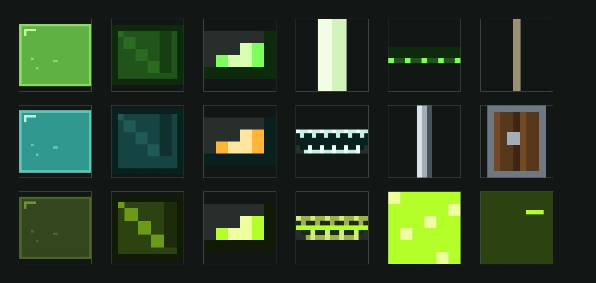
Veredicto de Juan
15-10-2026. Juan lo aprobó a la primera, con sus tres tipos: «guarda el mob». Después pidió pasar a mobs que
hagan algo (que te agarren, te traguen o se te aferren), mirando antes los de Dedsafío 3 y 4.
Bocetos: materiales/generadores/slime_modelo.py y slime_escenas.py, hechos desde cero (el Slime de
vanilla también, dibujado aquí con su paleta).